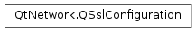

QSslConfiguration¶
Synopsis¶
Functions¶
- def
__eq__(other) - def
__ne__(other) - def
allowedNextProtocols() - def
backendConfiguration() - def
caCertificates() - def
ciphers() - def
diffieHellmanParameters() - def
ephemeralServerKey() - def
isNull() - def
localCertificate() - def
localCertificateChain() - def
nextNegotiatedProtocol() - def
nextProtocolNegotiationStatus() - def
peerCertificate() - def
peerCertificateChain() - def
peerVerifyDepth() - def
peerVerifyMode() - def
preSharedKeyIdentityHint() - def
privateKey() - def
protocol() - def
sessionCipher() - def
sessionProtocol() - def
sessionTicket() - def
sessionTicketLifeTimeHint() - def
setAllowedNextProtocols(protocols) - def
setBackendConfiguration([backendConfiguration=QMap< QByteArray,QVariant >()]) - def
setBackendConfigurationOption(name, value) - def
setCaCertificates(certificates) - def
setCiphers(ciphers) - def
setDiffieHellmanParameters(dhparams) - def
setLocalCertificate(certificate) - def
setLocalCertificateChain(localChain) - def
setPeerVerifyDepth(depth) - def
setPeerVerifyMode(mode) - def
setPreSharedKeyIdentityHint(hint) - def
setPrivateKey(key) - def
setProtocol(protocol) - def
setSessionTicket(sessionTicket) - def
setSslOption(option, on) - def
swap(other) - def
testSslOption(option)
Static functions¶
- def
defaultConfiguration() - def
setDefaultConfiguration(configuration) - def
supportedCiphers() - def
systemCaCertificates()
Detailed Description¶
The
PySide2.QtNetwork.QSslConfigurationclass holds the configuration and state of an SSL connection
PySide2.QtNetwork.QSslConfigurationis used by Qt networking classes to relay information about an open SSL connection and to allow the application to control certain features of that connection.The settings that
PySide2.QtNetwork.QSslConfigurationcurrently supports are:
- The SSL/TLS protocol to be used
- The certificate to be presented to the peer during connection and its associated private key
- The ciphers allowed to be used for encrypting the connection
- The list of Certificate Authorities certificates that are used to validate the peer’s certificate
These settings are applied only during the connection handshake. Setting them after the connection has been established has no effect.
The state that
PySide2.QtNetwork.QSslConfigurationsupports are:
- The certificate the peer presented during handshake, along with the chain leading to a CA certificate
- The cipher used to encrypt this session
The state can only be obtained once the SSL connection starts, but not necessarily before it’s done. Some settings may change during the course of the SSL connection without need to restart it (for instance, the cipher can be changed over time).
State in
PySide2.QtNetwork.QSslConfigurationobjects cannot be changed.
PySide2.QtNetwork.QSslConfigurationcan be used withPySide2.QtNetwork.QSslSocketand the Network Access API.Note that changing settings in
PySide2.QtNetwork.QSslConfigurationis not enough to change the settings in the related SSL connection. You must call setSslConfiguration on a modifiedPySide2.QtNetwork.QSslConfigurationobject to achieve that. The following example illustrates how to change the protocol to TLSv1_0 in aPySide2.QtNetwork.QSslSocketobject:config = sslSocket.sslConfiguration() config.setProtocol(QSsl.TlsV1) sslSocket.setSslConfiguration(config)
-
class
PySide2.QtNetwork.QSslConfiguration¶ -
class
PySide2.QtNetwork.QSslConfiguration(other) Parameters: other – PySide2.QtNetwork.QSslConfigurationConstructs an empty SSL configuration. This configuration contains no valid settings and the state will be empty.
PySide2.QtNetwork.QSslConfiguration.isNull()will return true after this constructor is called.Once any setter methods are called,
PySide2.QtNetwork.QSslConfiguration.isNull()will return false.Copies the configuration and state of
other. Ifotheris null, this object will be null too.
-
PySide2.QtNetwork.QSslConfiguration.NextProtocolNegotiationStatus¶ Describes the status of the Next Protocol Negotiation (NPN) or Application-Layer Protocol Negotiation (ALPN).
Constant Description QSslConfiguration.NextProtocolNegotiationNone No application protocol has been negotiated (yet). QSslConfiguration.NextProtocolNegotiationNegotiated A next protocol has been negotiated (see PySide2.QtNetwork.QSslConfiguration.nextNegotiatedProtocol()).QSslConfiguration.NextProtocolNegotiationUnsupported The client and server could not agree on a common next application protocol.
-
PySide2.QtNetwork.QSslConfiguration.ALPNProtocolHTTP2¶
-
PySide2.QtNetwork.QSslConfiguration.NextProtocolSpdy3_0¶
-
PySide2.QtNetwork.QSslConfiguration.NextProtocolHttp1_1¶
-
PySide2.QtNetwork.QSslConfiguration.allowedNextProtocols()¶ Return type: This function returns the allowed protocols to be negotiated with the server through the Next Protocol Negotiation (NPN) or Application-Layer Protocol Negotiation (ALPN) TLS extension, as set by
PySide2.QtNetwork.QSslConfiguration.setAllowedNextProtocols().See also
PySide2.QtNetwork.QSslConfiguration.nextNegotiatedProtocol()PySide2.QtNetwork.QSslConfiguration.nextProtocolNegotiationStatus()PySide2.QtNetwork.QSslConfiguration.setAllowedNextProtocols()QSslConfiguration::NextProtocolSpdy3_0 QSslConfiguration::NextProtocolHttp1_1
-
PySide2.QtNetwork.QSslConfiguration.backendConfiguration()¶ Return type: Returns the backend-specific configuration.
Only options set by
PySide2.QtNetwork.QSslConfiguration.setBackendConfigurationOption()orPySide2.QtNetwork.QSslConfiguration.setBackendConfiguration()will be returned. The internal standard configuration of the backend is not reported.
-
PySide2.QtNetwork.QSslConfiguration.caCertificates()¶ Return type: Returns this connection’s CA certificate database. The CA certificate database is used by the socket during the handshake phase to validate the peer’s certificate. It can be modified prior to the handshake with
PySide2.QtNetwork.QSslConfiguration.setCaCertificates(), or withPySide2.QtNetwork.QSslSocket‘sPySide2.QtNetwork.QSslSocket.addCaCertificate()andPySide2.QtNetwork.QSslSocket.addCaCertificates().
-
PySide2.QtNetwork.QSslConfiguration.ciphers()¶ Return type: Returns this connection’s current cryptographic cipher suite. This list is used during the handshake phase for choosing a session cipher. The returned list of ciphers is ordered by descending preference. (i.e., the first cipher in the list is the most preferred cipher). The session cipher will be the first one in the list that is also supported by the peer.
By default, the handshake phase can choose any of the ciphers supported by this system’s SSL libraries, which may vary from system to system. The list of ciphers supported by this system’s SSL libraries is returned by
QSslSocket.supportedCiphers(). You can restrict the list of ciphers used for choosing the session cipher for this socket by callingPySide2.QtNetwork.QSslConfiguration.setCiphers()with a subset of the supported ciphers. You can revert to using the entire set by callingPySide2.QtNetwork.QSslConfiguration.setCiphers()with the list returned byQSslSocket.supportedCiphers().
-
static
PySide2.QtNetwork.QSslConfiguration.defaultConfiguration()¶ Return type: PySide2.QtNetwork.QSslConfigurationReturns the default SSL configuration to be used in new SSL connections.
The default SSL configuration consists of:
- no local certificate and no private key
- protocol SecureProtocols (meaning either TLS 1.0 or SSL 3 will be used)
- the system’s default CA certificate list
- the cipher list equal to the list of the SSL libraries’ supported SSL ciphers that are 128 bits or more
-
PySide2.QtNetwork.QSslConfiguration.diffieHellmanParameters()¶ Return type: PySide2.QtNetwork.QSslDiffieHellmanParametersRetrieves the current set of Diffie-Hellman parameters.
If no Diffie-Hellman parameters have been set, the
PySide2.QtNetwork.QSslConfigurationobject defaults to using the 1024-bit MODP group from RFC 2409.
-
PySide2.QtNetwork.QSslConfiguration.ephemeralServerKey()¶ Return type: PySide2.QtNetwork.QSslKeyReturns the ephemeral server key used for cipher algorithms with forward secrecy, e.g. DHE-RSA-AES128-SHA.
The ephemeral key is only available when running in client mode, i.e.
QSslSocket.SslClientMode. When running in server mode or using a cipher algorithm without forward secrecy a null key is returned. The ephemeral server key will be set before emitting the encrypted() signal.
-
PySide2.QtNetwork.QSslConfiguration.isNull()¶ Return type: PySide2.QtCore.boolReturns
trueif this is a nullPySide2.QtNetwork.QSslConfigurationobject.A
PySide2.QtNetwork.QSslConfigurationobject is null if it has been default-constructed and no setter methods have been called.
-
PySide2.QtNetwork.QSslConfiguration.localCertificate()¶ Return type: PySide2.QtNetwork.QSslCertificateReturns the certificate to be presented to the peer during the SSL handshake process.
-
PySide2.QtNetwork.QSslConfiguration.localCertificateChain()¶ Return type: Returns the certificate chain to be presented to the peer during the SSL handshake process.
-
PySide2.QtNetwork.QSslConfiguration.nextNegotiatedProtocol()¶ Return type: PySide2.QtCore.QByteArrayThis function returns the protocol negotiated with the server if the Next Protocol Negotiation (NPN) or Application-Layer Protocol Negotiation (ALPN) TLS extension was enabled. In order for the NPN/ALPN extension to be enabled,
PySide2.QtNetwork.QSslConfiguration.setAllowedNextProtocols()needs to be called explicitly before connecting to the server.If no protocol could be negotiated or the extension was not enabled, this function returns a
PySide2.QtCore.QByteArraywhich is null.
-
PySide2.QtNetwork.QSslConfiguration.nextProtocolNegotiationStatus()¶ Return type: PySide2.QtNetwork.QSslConfiguration.NextProtocolNegotiationStatusThis function returns the status of the Next Protocol Negotiation (NPN) or Application-Layer Protocol Negotiation (ALPN). If the feature has not been enabled through
PySide2.QtNetwork.QSslConfiguration.setAllowedNextProtocols(), this function returnsNextProtocolNegotiationNone. The status will be set before emitting the encrypted() signal.See also
PySide2.QtNetwork.QSslConfiguration.setAllowedNextProtocols()PySide2.QtNetwork.QSslConfiguration.allowedNextProtocols()PySide2.QtNetwork.QSslConfiguration.nextNegotiatedProtocol()QSslConfiguration.NextProtocolNegotiationStatus
-
PySide2.QtNetwork.QSslConfiguration.__ne__(other)¶ Parameters: other – PySide2.QtNetwork.QSslConfigurationReturn type: PySide2.QtCore.boolReturns
trueif thisPySide2.QtNetwork.QSslConfigurationdiffers fromother. TwoPySide2.QtNetwork.QSslConfigurationobjects are considered different if any state or setting is different.See also
PySide2.QtNetwork.QSslConfiguration.operator==()
-
PySide2.QtNetwork.QSslConfiguration.__eq__(other)¶ Parameters: other – PySide2.QtNetwork.QSslConfigurationReturn type: PySide2.QtCore.boolReturns
trueif thisPySide2.QtNetwork.QSslConfigurationobject is equal toother.Two
PySide2.QtNetwork.QSslConfigurationobjects are considered equal if they have the exact same settings and state.See also
PySide2.QtNetwork.QSslConfiguration.operator!=()
-
PySide2.QtNetwork.QSslConfiguration.peerCertificate()¶ Return type: PySide2.QtNetwork.QSslCertificateReturns the peer’s digital certificate (i.e., the immediate certificate of the host you are connected to), or a null certificate, if the peer has not assigned a certificate.
The peer certificate is checked automatically during the handshake phase, so this function is normally used to fetch the certificate for display or for connection diagnostic purposes. It contains information about the peer, including its host name, the certificate issuer, and the peer’s public key.
Because the peer certificate is set during the handshake phase, it is safe to access the peer certificate from a slot connected to the
QSslSocket.sslErrors()signal,QNetworkReply.sslErrors()signal, or theQSslSocket.encrypted()signal.If a null certificate is returned, it can mean the SSL handshake failed, or it can mean the host you are connected to doesn’t have a certificate, or it can mean there is no connection.
If you want to check the peer’s complete chain of certificates, use
PySide2.QtNetwork.QSslConfiguration.peerCertificateChain()to get them all at once.
-
PySide2.QtNetwork.QSslConfiguration.peerCertificateChain()¶ Return type: Returns the peer’s chain of digital certificates, starting with the peer’s immediate certificate and ending with the CA’s certificate.
Peer certificates are checked automatically during the handshake phase. This function is normally used to fetch certificates for display, or for performing connection diagnostics. Certificates contain information about the peer and the certificate issuers, including host name, issuer names, and issuer public keys.
Because the peer certificate is set during the handshake phase, it is safe to access the peer certificate from a slot connected to the
QSslSocket.sslErrors()signal,QNetworkReply.sslErrors()signal, or theQSslSocket.encrypted()signal.If an empty list is returned, it can mean the SSL handshake failed, or it can mean the host you are connected to doesn’t have a certificate, or it can mean there is no connection.
If you want to get only the peer’s immediate certificate, use
PySide2.QtNetwork.QSslConfiguration.peerCertificate().
-
PySide2.QtNetwork.QSslConfiguration.peerVerifyDepth()¶ Return type: PySide2.QtCore.intReturns the maximum number of certificates in the peer’s certificate chain to be checked during the SSL handshake phase, or 0 (the default) if no maximum depth has been set, indicating that the whole certificate chain should be checked.
The certificates are checked in issuing order, starting with the peer’s own certificate, then its issuer’s certificate, and so on.
-
PySide2.QtNetwork.QSslConfiguration.peerVerifyMode()¶ Return type: PySide2.QtNetwork.QSslSocket.PeerVerifyModeReturns the verify mode. This mode decides whether
PySide2.QtNetwork.QSslSocketshould request a certificate from the peer (i.e., the client requests a certificate from the server, or a server requesting a certificate from the client), and whether it should require that this certificate is valid.The default mode is AutoVerifyPeer, which tells
PySide2.QtNetwork.QSslSocketto use VerifyPeer for clients, QueryPeer for servers.
Return type: PySide2.QtCore.QByteArrayReturns the identity hint.
-
PySide2.QtNetwork.QSslConfiguration.privateKey()¶ Return type: PySide2.QtNetwork.QSslKeyReturns the
SSL keyassigned to this connection or a null key if none has been assigned yet.
-
PySide2.QtNetwork.QSslConfiguration.protocol()¶ Return type: PySide2.QtNetwork.QSsl.SslProtocolReturns the protocol setting for this SSL configuration.
-
PySide2.QtNetwork.QSslConfiguration.sessionCipher()¶ Return type: PySide2.QtNetwork.QSslCipherReturns the socket’s cryptographic
cipher, or a null cipher if the connection isn’t encrypted. The socket’s cipher for the session is set during the handshake phase. The cipher is used to encrypt and decrypt data transmitted through the socket.The SSL infrastructure also provides functions for setting the ordered list of ciphers from which the handshake phase will eventually select the session cipher. This ordered list must be in place before the handshake phase begins.
-
PySide2.QtNetwork.QSslConfiguration.sessionProtocol()¶ Return type: PySide2.QtNetwork.QSsl.SslProtocolReturns the socket’s SSL/TLS protocol or UnknownProtocol if the connection isn’t encrypted. The socket’s protocol for the session is set during the handshake phase.
-
PySide2.QtNetwork.QSslConfiguration.sessionTicket()¶ Return type: PySide2.QtCore.QByteArrayIf
QSsl.SslOptionDisableSessionPersistencewas turned off, this function returns the session ticket used in the SSL handshake in ASN.1 format, suitable to e.g. be persisted to disk. If no session ticket was used orQSsl.SslOptionDisableSessionPersistencewas not turned off, this function returns an emptyPySide2.QtCore.QByteArray.Note
When persisting the session ticket to disk or similar, be careful not to expose the session to a potential attacker, as knowledge of the session allows for eavesdropping on data encrypted with the session parameters.
See also
PySide2.QtNetwork.QSslConfiguration.setSessionTicket()QSsl.SslOptionDisableSessionPersistencePySide2.QtNetwork.QSslConfiguration.setSslOption()
-
PySide2.QtNetwork.QSslConfiguration.sessionTicketLifeTimeHint()¶ Return type: PySide2.QtCore.intIf
QSsl.SslOptionDisableSessionPersistencewas turned off, this function returns the session ticket life time hint sent by the server (which might be 0). If the server did not send a session ticket (e.g. when resuming a session or when the server does not support it) orQSsl.SslOptionDisableSessionPersistencewas not turned off, this function returns -1.See also
PySide2.QtNetwork.QSslConfiguration.sessionTicket()QSsl.SslOptionDisableSessionPersistencePySide2.QtNetwork.QSslConfiguration.setSslOption()
-
PySide2.QtNetwork.QSslConfiguration.setAllowedNextProtocols(protocols)¶ Parameters: protocols – This function sets the allowed
protocolsto be negotiated with the server through the Next Protocol Negotiation (NPN) or Application-Layer Protocol Negotiation (ALPN) TLS extension; each element inprotocolsmust define one allowed protocol. The function must be called explicitly before connecting to send the NPN/ALPN extension in the SSL handshake. Whether or not the negotiation succeeded can be queried throughPySide2.QtNetwork.QSslConfiguration.nextProtocolNegotiationStatus().See also
PySide2.QtNetwork.QSslConfiguration.nextNegotiatedProtocol()PySide2.QtNetwork.QSslConfiguration.nextProtocolNegotiationStatus()PySide2.QtNetwork.QSslConfiguration.allowedNextProtocols()QSslConfiguration::NextProtocolSpdy3_0 QSslConfiguration::NextProtocolHttp1_1
-
PySide2.QtNetwork.QSslConfiguration.setBackendConfiguration([backendConfiguration=QMap< QByteArray, QVariant >()])¶ Parameters: backendConfiguration – Sets or clears the backend-specific configuration.
Without a
backendConfigurationparameter this function will clear the backend-specific configuration. More information about the supported options is available in the documentation ofPySide2.QtNetwork.QSslConfiguration.setBackendConfigurationOption().
-
PySide2.QtNetwork.QSslConfiguration.setBackendConfigurationOption(name, value)¶ Parameters: - name –
PySide2.QtCore.QByteArray - value – object
Sets the option
namein the backend-specific configuration tovalue.Options supported by the OpenSSL (>= 1.0.2) backend are available in the supported configuration file commands documentation. The expected type for the
valueparameter is aPySide2.QtCore.QByteArrayfor all options. The examples show how to use some of the options.Note
The backend-specific configuration will be applied after the general configuration. Using the backend-specific configuration to set a general configuration option again will overwrite the general configuration option.
- name –
-
PySide2.QtNetwork.QSslConfiguration.setCaCertificates(certificates)¶ Parameters: certificates – Sets this socket’s CA certificate database to be
certificates. The certificate database must be set prior to the SSL handshake. The CA certificate database is used by the socket during the handshake phase to validate the peer’s certificate.
-
PySide2.QtNetwork.QSslConfiguration.setCiphers(ciphers)¶ Parameters: ciphers – Sets the cryptographic cipher suite for this socket to
ciphers, which must contain a subset of the ciphers in the list returned byPySide2.QtNetwork.QSslConfiguration.supportedCiphers().Restricting the cipher suite must be done before the handshake phase, where the session cipher is chosen.
-
static
PySide2.QtNetwork.QSslConfiguration.setDefaultConfiguration(configuration)¶ Parameters: configuration – PySide2.QtNetwork.QSslConfigurationSets the default SSL configuration to be used in new SSL connections to be
configuration. Existing connections are not affected by this call.
-
PySide2.QtNetwork.QSslConfiguration.setDiffieHellmanParameters(dhparams)¶ Parameters: dhparams – PySide2.QtNetwork.QSslDiffieHellmanParametersSets a custom set of Diffie-Hellman parameters to be used by this socket when functioning as a server to
dhparams.If no Diffie-Hellman parameters have been set, the
PySide2.QtNetwork.QSslConfigurationobject defaults to using the 1024-bit MODP group from RFC 2409.
-
PySide2.QtNetwork.QSslConfiguration.setLocalCertificate(certificate)¶ Parameters: certificate – PySide2.QtNetwork.QSslCertificateSets the certificate to be presented to the peer during SSL handshake to be
certificate.Setting the certificate once the connection has been established has no effect.
A certificate is the means of identification used in the SSL process. The local certificate is used by the remote end to verify the local user’s identity against its list of Certification Authorities. In most cases, such as in HTTP web browsing, only servers identify to the clients, so the client does not send a certificate.
-
PySide2.QtNetwork.QSslConfiguration.setLocalCertificateChain(localChain)¶ Parameters: localChain – Sets the certificate chain to be presented to the peer during the SSL handshake to be
localChain.Setting the certificate chain once the connection has been established has no effect.
A certificate is the means of identification used in the SSL process. The local certificate is used by the remote end to verify the local user’s identity against its list of Certification Authorities. In most cases, such as in HTTP web browsing, only servers identify to the clients, so the client does not send a certificate.
Unlike
QSslConfiguration.setLocalCertificate()this method allows you to specify any intermediate certificates required in order to validate your certificate. The first item in the list must be the leaf certificate.
-
PySide2.QtNetwork.QSslConfiguration.setPeerVerifyDepth(depth)¶ Parameters: depth – PySide2.QtCore.intSets the maximum number of certificates in the peer’s certificate chain to be checked during the SSL handshake phase, to
depth. Setting a depth of 0 means that no maximum depth is set, indicating that the whole certificate chain should be checked.The certificates are checked in issuing order, starting with the peer’s own certificate, then its issuer’s certificate, and so on.
-
PySide2.QtNetwork.QSslConfiguration.setPeerVerifyMode(mode)¶ Parameters: mode – PySide2.QtNetwork.QSslSocket.PeerVerifyModeSets the verify mode to
mode. This mode decides whetherPySide2.QtNetwork.QSslSocketshould request a certificate from the peer (i.e., the client requests a certificate from the server, or a server requesting a certificate from the client), and whether it should require that this certificate is valid.The default mode is AutoVerifyPeer, which tells
PySide2.QtNetwork.QSslSocketto use VerifyPeer for clients, QueryPeer for servers.
Parameters: hint – PySide2.QtCore.QByteArraySets the identity hint for a preshared key authentication to
hint. This will affect the next initiated handshake; calling this function on an already-encrypted socket will not affect the socket’s identity hint.The identity hint is used in
QSslSocket.SslServerModeonly!
-
PySide2.QtNetwork.QSslConfiguration.setPrivateKey(key)¶ Parameters: key – PySide2.QtNetwork.QSslKeySets the connection’s private
keytokey. The private key and the localcertificateare used by clients and servers that must prove their identity to SSL peers.Both the key and the local certificate are required if you are creating an SSL server socket. If you are creating an SSL client socket, the key and local certificate are required if your client must identify itself to an SSL server.
-
PySide2.QtNetwork.QSslConfiguration.setProtocol(protocol)¶ Parameters: protocol – PySide2.QtNetwork.QSsl.SslProtocolSets the protocol setting for this configuration to be
protocol.Setting the protocol once the connection has already been established has no effect.
-
PySide2.QtNetwork.QSslConfiguration.setSessionTicket(sessionTicket)¶ Parameters: sessionTicket – PySide2.QtCore.QByteArraySets the session ticket to be used in an SSL handshake.
QSsl.SslOptionDisableSessionPersistencemust be turned off for this to work, andsessionTicketmust be in ASN.1 format as returned byPySide2.QtNetwork.QSslConfiguration.sessionTicket().See also
PySide2.QtNetwork.QSslConfiguration.sessionTicket()QSsl.SslOptionDisableSessionPersistencePySide2.QtNetwork.QSslConfiguration.setSslOption()
-
PySide2.QtNetwork.QSslConfiguration.setSslOption(option, on)¶ Parameters: - option –
PySide2.QtNetwork.QSsl.SslOption - on –
PySide2.QtCore.bool
Enables or disables an SSL compatibility
option. Ifonis true, theoptionis enabled. Ifonis false, theoptionis disabled.- option –
-
static
PySide2.QtNetwork.QSslConfiguration.supportedCiphers()¶ Return type: Returns the list of cryptographic ciphers supported by this system. This list is set by the system’s SSL libraries and may vary from system to system.
-
PySide2.QtNetwork.QSslConfiguration.swap(other)¶ Parameters: other – PySide2.QtNetwork.QSslConfigurationSwaps this SSL configuration instance with
other. This function is very fast and never fails.
-
static
PySide2.QtNetwork.QSslConfiguration.systemCaCertificates()¶ Return type: This function provides the CA certificate database provided by the operating system. The CA certificate database returned by this function is used to initialize the database returned by
PySide2.QtNetwork.QSslConfiguration.caCertificates()on the defaultPySide2.QtNetwork.QSslConfiguration.
-
PySide2.QtNetwork.QSslConfiguration.testSslOption(option)¶ Parameters: option – PySide2.QtNetwork.QSsl.SslOptionReturn type: PySide2.QtCore.boolReturns
trueif the specified SSL compatibilityoptionis enabled.
© 2018 The Qt Company Ltd. Documentation contributions included herein are the copyrights of their respective owners. The documentation provided herein is licensed under the terms of the GNU Free Documentation License version 1.3 as published by the Free Software Foundation. Qt and respective logos are trademarks of The Qt Company Ltd. in Finland and/or other countries worldwide. All other trademarks are property of their respective owners.